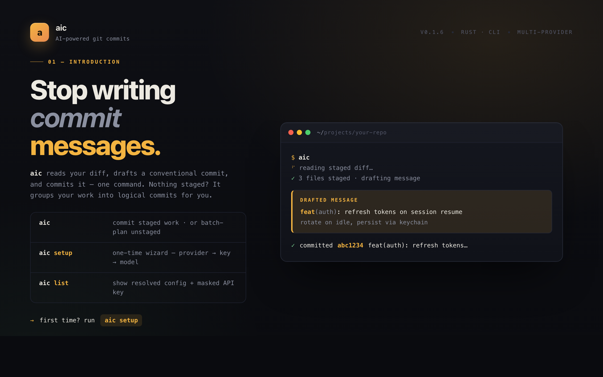

a
Stop writing commit messages by hand. aic reads your diff → drafts a clean
conventional commit → ships it. One command. 6 LLM providers. Your key,
your model. Auto-groups unstaged work into logical commits. brew install
aic github.com/CaicoLeung/aic

28
14
96
1.2k